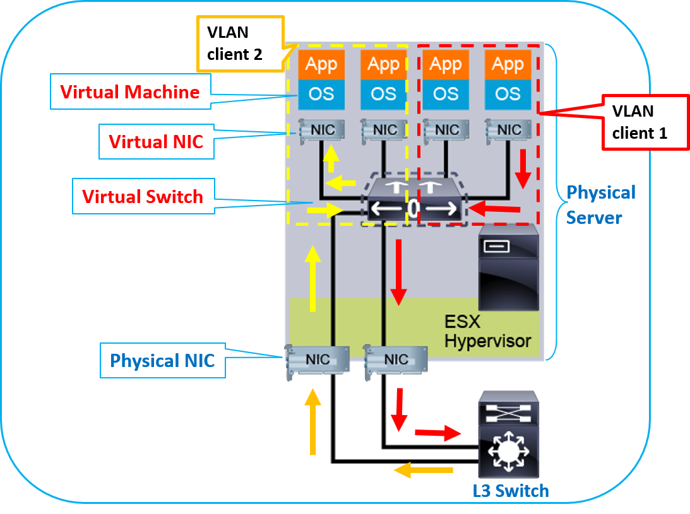

In computing, virtualization refers to the act of creating a virtual (rather than actual) version of somthing.
This includes virtual computer hardwer, virtual storage devices and virtual network resources.
Levels of Virtualization
virtualization at Inscruction Set Architecture (ISA) level
Every machine has an instruction set. This instruction set an interface between software and hardware. Using this instructions software can communicate withe hardware.
Virtualization at Operating System (O.S) level
In virtualization at HAL level each virtual machine is built from scratch i.e.by installing O.S., application suites, networcking systems, etc.
In cloud sometimes, We need to initialize 100 virtual machines at a single time, if we use virtualization at Hardware abstraction layer (HAL) level this can tack too much time.
So, to overcome this in Virtualization at Operating system level we share operating between Virtual machines along with the hardwer.

figure1.Server and network Virtualization
clic here for more details